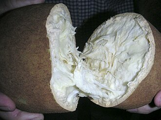

Depoimento de quem participa

"Participar da AgroFeira mudou totalmente a rentabilidade da minha família na roça."

"Participar da AgroFeira mudou totalmente a rentabilidade da minha família na roça."
Funcionamos todos os sábados, das 06h às 12h.
Não, a feira é gratuita para pequenos produtores rurais cadastrados.
Você pode selecionar a opção "A feira retira na propriedade" ao preencher o cadastro.